Contents
Question 1
% Clear clear all, close all, clc % Instantiating periodic differentiation matrix [x,Dx,Dxx] = PeriodicDiffMat([-pi,pi],100); % Analytic function handles for testing matrices uAna = @(x) exp(cos(x)); uxAna = @(x) -sin(x).*exp(cos(x)); uxxAna = @(x) (sin(x).^2-cos(x)).*exp(cos(x)); % Approximate first and second derivative of u u = uAna(x); ux = Dx*u; uxx = Dxx*u; % Graphical test ("eyeball") figure; subplot(3,2,[1 2]); plot(x,uAna(x),'-',x,u,'.'); xlabel('x'); legend({'u','u approx'}); subplot(3,2,[3 4]); plot(x,uxAna(x),'-',x,ux,'.'); xlabel('x'); legend({'ux','ux approx'}); subplot(3,2,[5 6]); plot(x,uxxAna(x),'-',x,uxx,'.'); xlabel('x'); legend({'uxx','uxx approx'});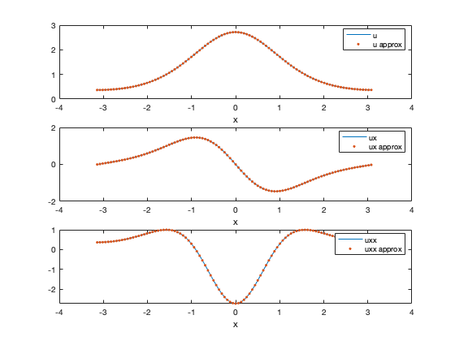
Question 2
% Test that inf-norm error is O(hx^2). For each value of nx nxVals = 10:10:100; errValsDx = zeros(size(nxVals)); errValsDxx = zeros(size(nxVals)); for i = 1:length(nxVals) % Get number of gridpoints nx = nxVals(i); % Instantiate the grid and differentiation matrices [x,Dx,Dxx] = PeriodicDiffMat([-pi,pi],nx); % Compute errors (approximating the infinity norm) u = uAna(x); errValsDx(i) = max( abs(uxAna(x) - Dx*u) ); errValsDxx(i) = max( abs(uxxAna(x) - Dxx*u) ); end % Plot errors and O(n^-2) function figure; loglog(nxVals,errValsDx,'.-',nxVals,errValsDxx,'.-',nxVals,nxVals.^(-2),'-'); xlabel('n'); legend({'Error ux','Error uxx','1/n^2'});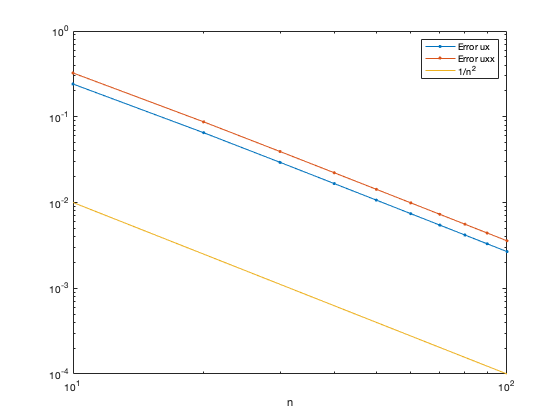
Question 3
% Instantiating differentiation matrix with null first derivative at the boundaries [x,Dx,Dxx] = NeumannDiffMat([-5,5],100); % Analytic function handles for testing matrices uAna = @(x) x.^3/3 - 25*x; uxAna = @(x) x.^2 - 25; vAna = @(x) cos(2*pi/10 * x); vxxAna = @(x) -(2*pi/10)^2*cos(2*pi/10 * x); % Approximate first and second derivatives u = uAna(x); v = vAna(x); ux = Dx*u; vxx = Dxx*v; % Graphical test ("eyeball") figure; subplot(2,2,[1 2]); plot(x,uxAna(x),'-',x,ux,'.'); xlabel('x'); legend({'u_x','u_x approx'}); subplot(2,2,[3 4]); plot(x,vxxAna(x),'-',x,vxx,'.'); xlabel('x'); legend({'v_xx','v_xx approx'});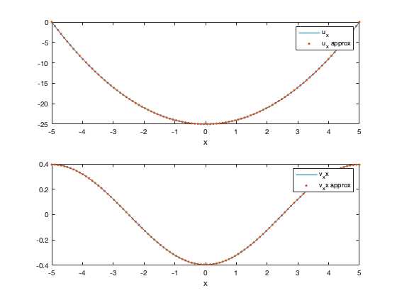
Question 4
% Test that inf-norm error is O(hx^2). For each value of nx nxVals = 10:10:100; errValsDx = zeros(size(nxVals)); errValsDxx = zeros(size(nxVals)); for i = 1:length(nxVals) % Get number of gridpoints nx = nxVals(i); % Instantiate the grid and differentiation matrices [x,Dx,Dxx] = NeumannDiffMat([-5,5],nx); % Compute errors (approximating the infinity norm) u = uAna(x); v = vAna(x); errValsDx(i) = max( abs(uxAna(x) - Dx*u) ); errValsDxx(i) = max( abs(vxxAna(x) - Dxx*v) ); end % Plot errors and O(n^-2) function figure; loglog(nxVals,errValsDx,'.-',nxVals,errValsDxx,'.-',nxVals,nxVals.^(-2),'-'); xlabel('n'); legend({'Error ux','Error uxx','1/n^2'});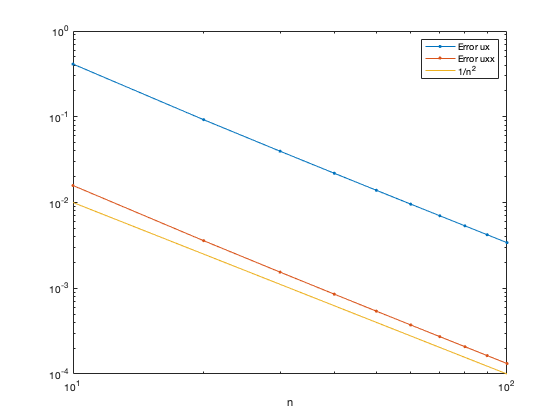
Question 6
See AllenCahn.m
Question 7
% Setup problem nx = 100; [x,~,Dxx] = NeumannDiffMat([-5,5],nx); % Parameters [nu lambda alpha beta gamma] p = [1; -0.2; 0; 1; 1]; % Analytical function and function evaluation uAna = @(x) cos(2*pi/10 * x); FAna = @(x) -p(1)*(2*pi/10)^2*cos(2*pi/10 * x) + p(2)* uAna(x) + p(3) *uAna(x).^2 + p(4)*uAna(x).^3 -p(5)*uAna(x).^5; % Approximation of F(u) u = uAna(x); F = AllenCahn(u,p,Dxx); % Plot of the error figure; plot(x,abs(F-FAna(x)),'.-'); xlabel('x'); ylabel('Error'); disp(['Inf-norm Error for F(u(x)) = ' num2str(max(abs(F-FAna(x))))]);
Inf-norm Error for F(u(x)) = 0.0001325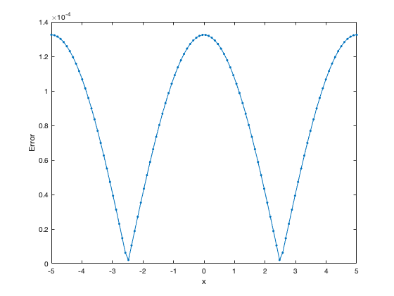
Question 8
When 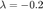 the trivial steady state 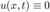 is a stable equilibrium
nx = 100; [x,~,Dxx] = NeumannDiffMat([-5,5],nx); % Parameters [nu lambda alpha beta gamma] p = [1; -0.2; 0; 1; 1]; % Initial condition u0 = 1./cosh(x).^2; % Right-Hand side casted as a function of (t,u) rhs = @(t,u) AllenCahn(u,p,Dxx); % Timestep tSpan = [0 50]; [t,UHist] = ode15s(rhs,tSpan,u0); % Plot [X,T] = meshgrid(x,t); figure; surf(X,T,UHist); shading interp; xlabel('x'); ylabel('t'); zlabel('u');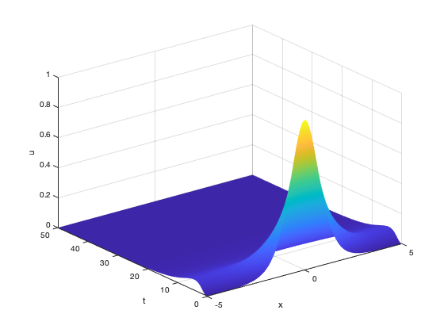
Question 9
When 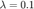 the homogeneous steady state 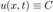 is a stable equilibrium. When 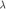 changes, we attain a different homogeneous equilibrium than before
% Time step with lambda = 0.1 p = [1; 0.1; 0; 1; 1]; u0 = 1./cosh(x).^2; rhs = @(t,u) AllenCahn(u,p,Dxx); tSpan = [0 50]; [t,UHist] = ode15s(rhs,tSpan,u0); % Plot [X,T] = meshgrid(x,t); figure; surf(X,T,UHist); shading interp; xlabel('x'); ylabel('t'); zlabel('u');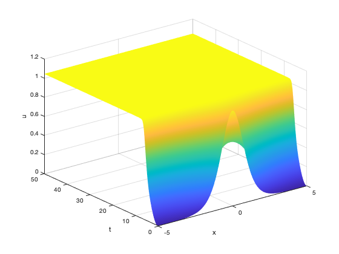
Question 10
% Time step with different parameters p = [1; 0.3; 0; 1; 1]; u0 = 0.4*cos(2*pi/10*x); rhs = @(t,u) AllenCahn(u,p,Dxx); tSpan = [0 100]; [t,UHist1] = ode15s(rhs,tSpan,u0); [X,T] = meshgrid(x,t); figure; surf(X,T,UHist1); shading interp; xlabel('x'); ylabel('t'); zlabel('u'); % Change initial conditions u0 = 0.2*cos(2*pi/10*x); [t,UHist2] = ode15s(rhs,tSpan,u0); [X,T] = meshgrid(x,t); figure; surf(X,T,UHist2); shading interp; xlabel('x'); ylabel('t'); zlabel('u'); % Plot final states figure; plot(x,UHist1(end,:)',x,UHist2(end,:)'); xlabel('x'); ylabel('u(x,T)'); legend({'final state for initial condition 1','final state for initial condition 2'});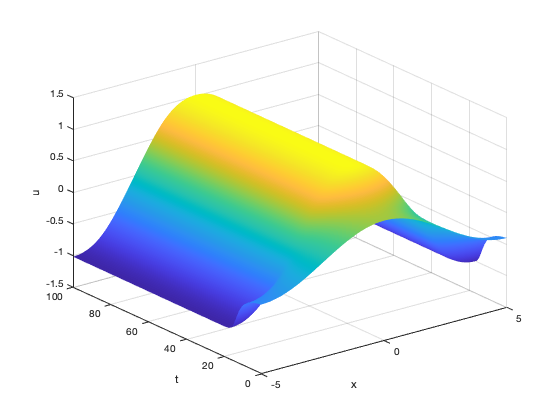 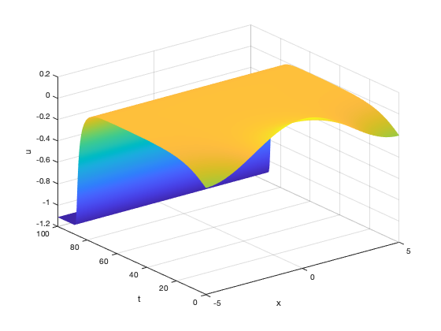 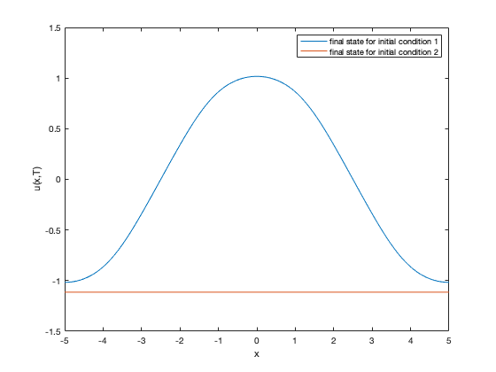
Question 11
Test 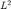 norm function on the spatial profile 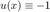, which has norm equal to 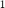
ComputeL2Norm(-ones(size(x)),x)
ans =
1.0000
Question 12
I can see 3 solution branches: one with 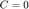, one with 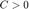 and one with 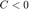. This number is not set in stone, some people may do more work, determine stability, and decide to count as separate branches the stable and unstable solution branches (so they would get 6 branches in this case).
One can guess that there is a pitchfork bifurcation of the state, and 2 saddle-node bifurcations, one on the branch for , and one on the branch for . This is only a guess because we have no information about the stability of the states, as solutions to PDEs.
bd = figure(); fimplicit( @(lam,u) lam.*u + u.^3 - u.^5,[-0.5 1 -1.5 1.5]); xlabel('lambda'); ylabel('L2-norm');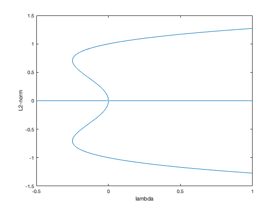
Question 13
lambdaVals = [0.7 -0.4]; l2NormVals = zeros(size(lambdaVals)); % For each value of lambda for i = 1:length(lambdaVals) % Set parameters and timestep p = [1; lambdaVals(i); 0; 1; 1]; u0 = 1./cosh(x).^2; rhs = @(t,u) AllenCahn(u,p,Dxx); tSpan = [0 50]; [t,UHist] = ode15s(rhs,tSpan,u0); uFinal = UHist(end,:)'; % Compute and display l2 norm of final state l2NormVals(i) = ComputeL2Norm(uFinal,x); end figure(bd); hold on; plot(lambdaVals,l2NormVals,'*'); hold off;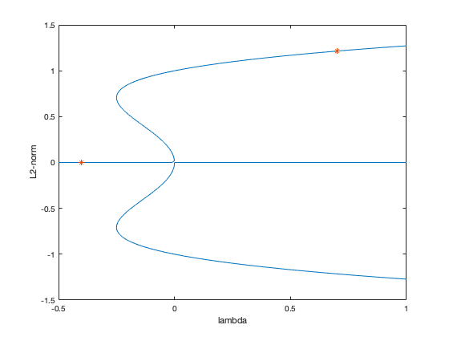